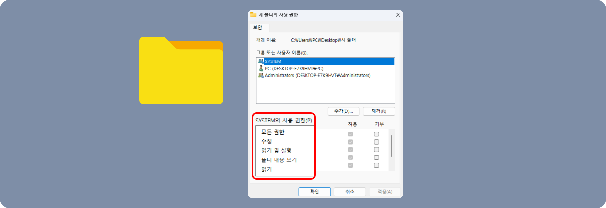

개념 학습
정보 보안 방법
정보 보안 실천 방법
자신이 사용하고 있는 컴퓨팅 시스템의 정보를 올바르게 보호하는 방법을 직접 실천해 보자.
-
1 설정할 파일이나 폴더에 마우스를 위치시키고 오른쪽 단추를 누른 뒤 [속성]을 선택한다.
-
2 [보안] 탭을 누른 뒤 [편집]을 눌러 각 사용 권한을 설정한다.
-
2 [보안] 탭을 누른 뒤 [편집]을 눌러 각 사용 권한을 설정한다.
-
모든 권한폴더에 대한 접근 권한 및 소유권을 변경할 수 있고, 하위 폴더의 파일을 삭제할 수 있다.
-
수정폴더를 삭제할 수 있으며, 읽기 및 실행과 쓰기 권한이 주어진 것과 같은 형태이다.
-
읽기 및 실행읽기를 할 수 있으며, 폴더나 파일을 옮길 수 있다.
-
읽기내용을 읽기만 할 수 있다.
-
쓰기해당 폴더에 하위 폴더와 파일을 만들 수 있고, 접근 권한 및 소유권의 설정 확인이 가능하다.
-
디지털 윤리는 디지털 공간에서 발생하는 윤리적인 문제를 해결하기 위한 규범 체계로, 정보 보호 의식 및 정보 보안 의식도 이에 해당한다. 디지털 사회에서 안전하게 살아가기 위해서는 정보를 제공하는 공급자와 정보를 사용하는 사용자 모두 올바른 보안 의식을 가지고 정보를 다루어야 하며, 올바른 정보 보안 방법을 알고 실천하여 다양한 위협으로부터 정보를 보호할 수 있어야 한다.
정보 보안 방법
-
접근 제어
-
데이터 보존 정책 수립
-
정기 업데이트 및 보안 평가
-
사고 대응 계획 수립
-
직원 교육
-
영문 대문자와 소문자, 숫자, 특수 문자 중 세 종류 이상의 문자를 혼합하여 8자 이상의 비밀번호를 만든다.강력한 비밀번호 설정비밀번호 안전 체크 사이트
- security.org는 사용자가 입력한 비밀번호의 보안 강도를 분석해 주는 사이트이다. 비밀번호가 해킹되기까지 걸리는 예상 시간을 알려 주며, 이를 통해 비밀번호의 복잡성과 안전성을 평가할 수 있다. 비밀번호 보안을 강화하기 위한 참고용 도구로 활용된다.
- 웹사이트: https://www.security.org/how-secure-is-my-password
-
비밀번호가 없는 공공 무선망에서는 민감한 정보 전송을 자제하고 신뢰할 수 있는 무선망을 사용한다.보안 무선망 사용 주의
-
온라인 계정에 대해 다단계 인증을 사용한다. 비밀번호가 노출되더라도 나의 정보를 더 안전하게 보호할 수 있다.다단계 인증 사용
-
인터넷 검색 결과나 문자 수신 시 의심스러운 링크를 클릭하거나 알 수 없는 파일을 내려받지 않는다.불분명한 출처 주의
-
하드웨어 장애, 악성 코드 등 여러 위험으로부터 중요한 정보 손실을 방지하기 위해 정기적으로 데이터를 백업한다.정기적인 데이터 백업
-
사용하는 컴퓨터나 스마트폰에 바이러스 백신이나 악성 프로그램 방지 소프트웨어를 설치하고 정기적으로 업데이트한다.바이러스 백신 설치 및 최신 업데이트 유지